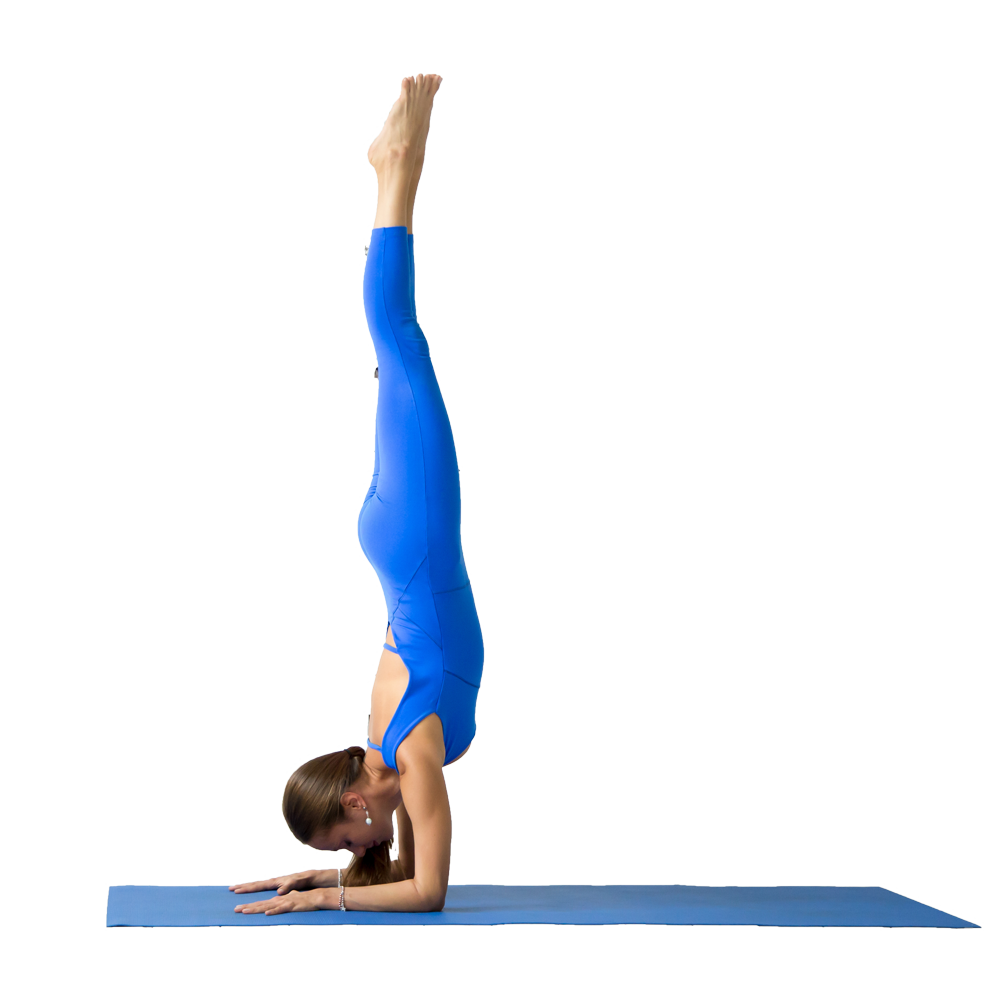

What is yoga and how does it work?
Yoga is an ancient and complex practice, rooted in Indian philosophy. It began as a spiritual practice but has become popular as a way of promoting physical and mental well-being.
Although classical yoga also includes other elements, yoga as practiced in the United States typically emphasizes physical postures (asanas), breathing techniques (pranayama), and meditation (dyana).
There are many different yoga styles, ranging from gentle practices to physically demanding ones. Differences in the types of yoga used in research studies may affect study results. This makes it challenging to evaluate research on the health effects of yoga.
Yoga and two practices of Chinese origin—tai chi and qigong—are sometimes called “meditative movement” practices. All three practices include both meditative elements and physical ones.
What are the health benefits of yoga?
Research suggests that yoga may:Help improve general wellness by relieving stress, supporting good health habits, and improving mental/emotional health, sleep, and balance.
Relieve neck pain, migraine or tension-type headaches, and pain associated with knee osteoarthritis. It may also have a small benefit for low-back pain.
Help people with overweight or obesity lose weight.
Help people quit smoking.
Help people manage anxiety symptoms or depression.
Relieve menopause symptoms.
Be a helpful addition to treatment programs for substance use disorders.
Help people with chronic diseases manage their symptoms and improve their quality of life.
Yoga is good for your body in so many ways. Let’s look at 15 common yoga poses to understand their benefits to the different parts of your body.
Bridge-Bandha Sarvangasana
The Bridge yoga pose is a great front hip joints opener, it also strengthens your spine, opens the chest, and improves your spinal flexibility in addition to stimulating your thyroid. This pose brings many benefits to your body, such as the relief from stress, anxiety, insomnia and it can help with depression.
Downward Dog-Adho Mukha Svanasana
The Downward Dog yoga pose lengthens and decompresses the spine, stretches the hamstrings, strengthens your arms, flushes your brain with fresh oxygen and calms your mind.

Child Pose-Balasana
The Child Pose is a resting pose useful to relieve neck, back and hip strain. While in the posture you should have slow are regulated breath; extended arms; resting hips and your forehead should be touching the mat. You can always return to this pose as at it is one of the most restorative and calming pose
Easy Pose-Sukhasana
The Easy Pose may seem as an easy pose but it has many benefits for the body. For example, it is a hip opener, it is calming, and it eases the menstrual pain for women in addition to lowering the level of anxiety. (while doing the posture make sure your spine is streightened)
Warrior 1-Virabhadrasana I
The Warrior I is a great pose for those of you who have had a hectic day at work and just need to relax your body and mind. While in this pose you are strengthening your legs, your are opening your chest and shoulders, movements which we usually don’t do throughout our day, but they are necessary for a good posture and peaceful mind. The effects out of this posture are tremendous: it strengthens the muscles of your knees and feet, it stretches your shoulders and spine, and it improves your focus.
Warrior 2-Virabhadrasana II
The Warrior II yoga pose also strengthens your legs and arms, opens your chest and shoulders, and it contracts your abdominal organs. Your breath needs to be regulated, your focus should be on the expansion of your arms which will help you to improve your patience. Keep your self elevated rather than collapsing with your hips – don’t allow gravitation to pull you down. Stay strong.
Triangle - Trikonasana
The Triangle is one of those postures that brings to your body many benefits. For example, it improves the flexibility of your spine; it helps with the alignment of your shoulders; it relieves back pain and stiffness in the neck area, but don’t forget you need to practice each posture on the left and right site – balancing your postures is very important. With the practice of this posture you will notice many improvements, but especially for your posture.
Four Limbed Staff - Chaturanga
The Four Limbed Staff yoga pose strengthens your arms, wrists and abdomen. It is also a good preparation pose for more challenging arm balancing poses
Chair - Utkatasana
The Chair yoga position tones your leg muscles, strengthens your hip reflexors, ankles, calves and back. It stretches the chest and shoulders. It reduces symptoms of flat feet and it stimulates your heart, diaphragm, and abdominal organs.
Tree - Vrksasana
The Tree yoga pose may seems as another easy posture but it is not a resting asana. Your back should be aligned property (extended), your hips should be at one level, and since your stability depends on the distribution of your weight on your standing leg ensure you do while maintaing and improving your balance.

Boat-Navasana
The Boat yoga requires for one to be stable (as a boat) which means, straight back, chin looking forward, while knees and arms are locked. This is not an easy posture. Through it you build strong abdominal and core straight.

Crow-Bakasana
The Crow yoga pose strengthens the wrists, forearms and abdomen while also stretching the hamstring. Balance is crucial for this pose.
Arm Balance - Pincha Mayurasana
The Crow yoga pose strengthens the wrists, forearms and abdomen while also stretching the hamstring. Balance is crucial for this pose.
Corpse - Savasana
The Corpse yoga pose is one of the most important postures. It is meant to rejuvenate your mind and body after practice while also allowing you to shift your attention to your inner-self. The benefits: lowering your blood pressure, calming you and giving your body the opportunity to obsorb all of the benefits you worked out for.
King Dancer - Natarajasana
The King Dancer yoga pose strengthens your legs, improves balance and core strength while also stretches your shoulders and improves your focus. It is one of the most graceful asana.